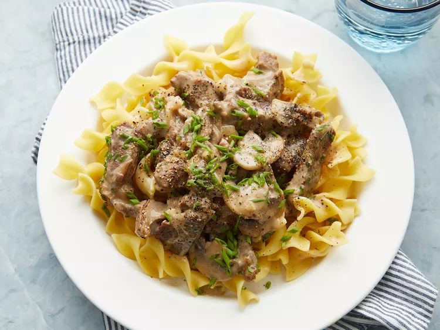

Chef Johns Classic Beef Stroganoff (slow-cooker adapted)

Description
Ingredients
- 1 tablespoon vegetable oil
- 2 lbs beef chuck roast, cut into 1/2 inch strips
- salt $ pepper to taste
- 1 tablespoon butter
- 1/2 medium onion, sliced or diced
- 8 ounces sliced mushrooms
- 2 cloves garlic, minced
- 1 1/2 tablespoons all-purpose flour
- 1/2 cup white wine
- 2 cups beef broth, divided
- 3/4 cup sour cream / creme fraiche
- 1 tablespoon fresh chopped chives
- salt, pepper & Worcestershire sauce to taste
Steps
- Season beef generously with salt & pepper
-
Heat oil in a large skillet over high heat until nearly smoking. Stir in
beef and cook stirring constantly, for 6-7 minutes, until liquid
evaporates and meat browns. Remove meat from pan and set aside.
-
Stir butter, mushrooms and onions into pan; cook and stir over medium
heat until lightly browned. Add garlic and stir for 30 seconds. Stir in
flour and cook for 1-2 minutes until incorporated.
-
Deglaze the pan with wine and 1 cup of stock, scraping the bottom of the
pan to release any browned bits. Bring to a simmer, cook for 3-4
minutes, until the sauce thickens.
-
Return beef to the pan. Stir in remaining cup of stock; bring to a
simmer and transfer to the slow-cooker set on low and cook 2-3 hours
with the lid on.
-
Stir in sour cream/creme fraiche. Stir in chives. Season with
Worcestershire, salt and pepper to taste.